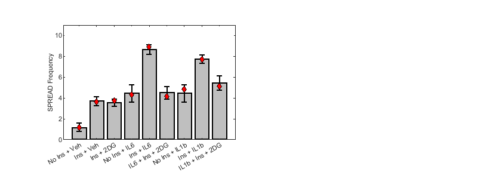
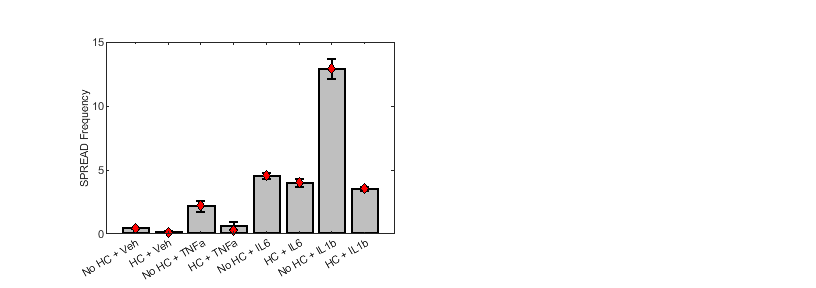

Figure 6 - SPREADs and Metabolism or HC
Experimenting with HBE1 cells expressing the ERK-KTR ERK biosensor Determing the effects of Insulin or Glucose depervation, or treatment with hydrocortisone on the HBE1 cell's SPREAD freqency following cytokine treatment (20ng/mL IL-6 or 20 ng/mL IL-1b).
Contents
- Figure 6A - Showing HBE1 cells expressing both the ERK-KTR (ERK) and AMPKAR2 (AMPK) biosensors in the same cell
- Figure 6B
- process the data
- Process the Merged +/- Ins and +/- 2-DG data
- Plot the data together for Figure 6B
- Now do the same thing for Figure 6C - +/- HC
- Plot the data together for Figure 6C
Figure 6A - Showing HBE1 cells expressing both the ERK-KTR (ERK) and AMPKAR2 (AMPK) biosensors in the same cell
Example images of HBE1 cells expressing both the ERK and AMPK biosensor were taken from the 2021-07-28 HBE1 AMPKAR ERKTR Cytokine INS OLI 2DG experiment. Random time intervals were selected for sampling. For ERK-KTR nuclear localization of signal implies low ERK activity in the cell, more cytoplasmic signal implies high ERK activity in the cell. the cells AMPKAR (aka AMPKAR2) data is psuedo colored images made by taking the ratio of CFP/YFP channels. Orange/Red color is high AMPK activity, white is low AMPK activity
Figure 6B
Combine Multiple SPREAD experiment's +/- INS and +/- 2-DG experiments
% add paths addpath('Z:\Code\Image Analysis\','Z:\Code\Cell Trace\','Z:\Code\Nick\') % Base path baseP = 'Z:\Processed Data\SPREADs\'; % Experiment 1 % 2020-11-30 HBE1 AMPKAR ERKTR Cytokine Array Stat test dataset{1} = [baseP,'2021-07-28 HBE1 AMPKAR ERKTR Cytokine INS OLI 2DG\2021-07-28 HBE1 AMPKAR ERKTR Cytokine INS OLI 2DG_Processed_Copy.mat']; % Experiment 2 % 2021-08-18 HBE1 EKAR Cytokine Array dataset{2} = [baseP,'2021-08-18 HBE1 AE Cyto INS 2DG OLI\2021-08-18 HBE1 AE Cyto INS 2DG OLI_Processed_Copy.mat']; % collect the data from the respective experiments data1 = convertSPREADToDataframe2(dataset, 'ERKTR', 'tmaxaftertx',24,'aftertx',2,'exclude',{'EGF','LPS','Oli'});
process the data
make a copy of the data
data2 = data1; % shorten the names for simplicity data2.txinfo = strrep(data2.txinfo,' 0 ',''); data2.txinfo = strrep(data2.txinfo,' 1 vehicle',' + Veh'); data2.txinfo = strrep(data2.txinfo,' 5mM TwoDG',' 10mM TwoDG'); % fix the platemap mistake in labeling data2.txinfo = strrep(data2.txinfo,'+ Veh + Veh','+ Veh');% delete repeat tx names no10 = ~contains(data2.txinfo,'10ng/mL'); % only need the 20ng/mL data data3 = data2(no10,:); no2dg = ~contains(data3.txinfo,('1 NOINS' + wildcardPattern + '10mM TwoDG')); % exclude no ins 2dg data3 = data3(no2dg,:); % simplify the names for ease of use data3.txinfo = strrep(data3.txinfo,'1 fim','Ins'); data3.txinfo = strrep(data3.txinfo,'1 NOINS','No Ins'); data3.txinfo = strrep(data3.txinfo,' 10mM TwoDG',' + 2DG'); data3.txinfo = strrep(data3.txinfo,'20ng/mL ','+ '); data3.txinfo = strrep(data3.txinfo,'1b + Veh','1b'); data3.txinfo = strrep(data3.txinfo,'6 + Veh','6'); data3.txinfo = strrep(data3.txinfo,'Ins + IL1b + 2DG','Ins+2DG + IL1b'); data3.txinfo = strrep(data3.txinfo,'Ins + IL6 + 2DG','Ins+2DG + IL6'); data3.txinfo = strrep(data3.txinfo,'Ins + Veh + 2DG','Ins+2DG + Veh'); % get the cytokines for grouping data3.txinfo = categorical(data3.txinfo,{'No Ins + Veh', 'Ins + Veh', 'Ins+2DG + Veh', 'No Ins + IL6', 'Ins + IL6', 'Ins+2DG + IL6','No Ins + IL1b', 'Ins + IL1b', 'Ins+2DG + IL1b'});
Process the Merged +/- Ins and +/- 2-DG data
For reference: 1 fim = 10 ug/mL Insulin containing imaging media 1 NOINS = insulin deprived cells
fig6Stats = grpstats(data3,"txinfo",["mean","median","sem"],"DataVars",["freq","dur","area"]); [~,~,stats] = anova1(data3.freq,data3.txinfo,'off'); % See which are significantly different versus control (+ ins) [resultsC,~,~,gnamesC] = multcompare(stats,"CriticalValueType","dunnett",'ControlGroup',find(matches(stats.gnames,'Ins + Veh')),'Display','off'); resultsTblC = array2table(resultsC,"VariableNames", ["Group","Control Group","Lower Limit","Difference","Upper Limit","P-value"]); resultsTblC.("Group") = gnamesC(resultsTblC.("Group")); resultsTblC.("Control Group") = gnamesC(resultsTblC.("Control Group")) % See which are different from 20 ng/mL IL-6 [results6,~,~,gnames6] = multcompare(stats,"CriticalValueType","dunnett",'ControlGroup',find(matches(stats.gnames,'Ins + IL6')),'Display','off'); resultsTbl6 = array2table(results6,"VariableNames", ["Group","Control Group","Lower Limit","Difference","Upper Limit","P-value"]); resultsTbl6.("Group") = gnames6(resultsTbl6.("Group")); resultsTbl6.("Control Group") = gnames6(resultsTbl6.("Control Group")) % See which are different from 20 ng/mL IL-1b [results1b,~,~,gnames1b] = multcompare(stats,"CriticalValueType","dunnett",'ControlGroup',find(matches(stats.gnames,'Ins + IL1b')),'Display','off'); resultsTbl1b = array2table(results1b,"VariableNames", ["Group","Control Group","Lower Limit","Difference","Upper Limit","P-value"]); resultsTbl1b.("Group") = gnames1b(resultsTbl1b.("Group")); resultsTbl1b.("Control Group") = gnames1b(resultsTbl1b.("Control Group"))
resultsTblC =
8×6 table
Group Control Group Lower Limit Difference Upper Limit P-value
__________________ _____________ ___________ __________ ___________ __________
{'No Ins + Veh' } {'Ins + Veh'} -4.8793 -2.5386 -0.19784 0.029125
{'Ins+2DG + Veh' } {'Ins + Veh'} -2.5109 -0.1702 2.1705 1
{'No Ins + IL6' } {'Ins + Veh'} -1.5901 0.75065 3.0914 0.92145
{'Ins + IL6' } {'Ins + Veh'} 2.6146 4.9553 7.296 1.1574e-05
{'Ins+2DG + IL6' } {'Ins + Veh'} -1.532 0.8087 3.1494 0.89052
{'No Ins + IL1b' } {'Ins + Veh'} -1.5966 0.74416 3.0849 0.9246
{'Ins + IL1b' } {'Ins + Veh'} 1.6815 4.0222 6.3629 0.00031885
{'Ins+2DG + IL1b'} {'Ins + Veh'} -0.58789 1.7528 4.0936 0.21108
resultsTbl6 =
8×6 table
Group Control Group Lower Limit Difference Upper Limit P-value
__________________ _____________ ___________ __________ ___________ __________
{'No Ins + Veh' } {'Ins + IL6'} -9.8351 -7.4939 -5.1526 6.2493e-10
{'Ins + Veh' } {'Ins + IL6'} -7.2966 -4.9553 -2.614 1.7503e-05
{'Ins+2DG + Veh' } {'Ins + IL6'} -7.4668 -5.1255 -2.7842 9.6795e-06
{'No Ins + IL6' } {'Ins + IL6'} -6.5459 -4.2046 -1.8634 0.00017396
{'Ins+2DG + IL6' } {'Ins + IL6'} -6.4879 -4.1466 -1.8053 0.00019392
{'No Ins + IL1b' } {'Ins + IL6'} -6.5524 -4.2111 -1.8699 0.00019224
{'Ins + IL1b' } {'Ins + IL6'} -3.2744 -0.93308 1.4082 0.80712
{'Ins+2DG + IL1b'} {'Ins + IL6'} -5.5437 -3.2024 -0.86117 0.0040775
resultsTbl1b =
8×6 table
Group Control Group Lower Limit Difference Upper Limit P-value
__________________ ______________ ___________ __________ ___________ __________
{'No Ins + Veh' } {'Ins + IL1b'} -8.9016 -6.5608 -4.22 1.4237e-07
{'Ins + Veh' } {'Ins + IL1b'} -6.363 -4.0222 -1.6814 0.00029049
{'Ins+2DG + Veh' } {'Ins + IL1b'} -6.5332 -4.1924 -1.8516 0.00017255
{'No Ins + IL6' } {'Ins + IL1b'} -5.6124 -3.2716 -0.93076 0.0033258
{'Ins + IL6' } {'Ins + IL1b'} -1.4077 0.93308 3.2739 0.80711
{'Ins+2DG + IL6' } {'Ins + IL1b'} -5.5543 -3.2135 -0.87271 0.0039478
{'No Ins + IL1b' } {'Ins + IL1b'} -5.6188 -3.278 -0.93725 0.0032282
{'Ins+2DG + IL1b'} {'Ins + IL1b'} -4.6101 -2.2694 0.071439 0.060456
Plot the data together for Figure 6B
figgy = figure; bar(fig6Stats.txinfo,fig6Stats.mean_freq,... 'FaceColor',[0.75,0.75,0.75],... 'EdgeColor','k', 'LineWidth',1.5); hold on; % plot the data errorbar(fig6Stats.txinfo,fig6Stats.mean_freq,fig6Stats.sem_freq,'.','vertical','Color','k','LineWidth', 1.5,'MarkerSize', 1); % add the error bar plot(fig6Stats.txinfo,fig6Stats.median_freq,'d','MarkerFaceColor','r','MarkerEdgeColor','k') % add the median xticklabels({'No Ins + Veh','Ins + Veh','Ins + 2DG','No Ins + IL6','Ins + IL6', 'IL6 + Ins + 2DG','No Ins + IL1b','Ins + IL1b', 'IL1b + Ins + 2DG'}) % simplify the x tick labels ylim([0, 11]) % set the y axis limits ylabel('SPREAD Frequency'); hold off; % standardize the figure for printing figgy.Units = "inches"; fontname(figgy,"Arial"); fontsize(figgy,8,"points") % make the font 8 pt and arial figgy.Position = [0.5,0.5,8.5,3]; ax = gca; ax.Units = "inches"; ax.Position = [1.1,0.56,3,2]; saveas(figgy,'Z:\imageData\SPREADs\Plotting_Code\Figure_Outputs\F6B_Cyto_INS_2DG.fig') saveas(figgy,'Z:\imageData\SPREADs\Plotting_Code\Figure_Outputs\F6B_Cyto_INS_2DG.svg')
Now do the same thing for Figure 6C - +/- HC
% 2022-08-18 HBE1 EKAR Cyto HC % Load the SPREAD frequency data d6C = readtable('Z:\imageData\SPREADs\2022-08-18 HBE1 EKAR Cyto HC\Figures\keep\EKAR Spread freq before 24 hours excluding EGF bar v2_data.xls'); % exclude the IFN data (bad IFN) d6C = d6C(~contains(d6C.origin,'IFN'),:); % set the order for txs d6C.txinfo = categorical(d6C.origin,{'NO-HC+vehicle','f-im+vehicle','NO-HC+TNFa20ng mL','f-im+TNFa20ng mL','NO-HC+IL620ng mL','f-im+IL620ng mL','NO-HC+IL1b20ng mL','f-im+IL1b20ng mL'},{'No HC + Veh', 'HC + Veh', 'No HC + TNFa', 'HC + TNFa', 'No HC + IL6', 'HC + IL6', 'No HC + IL1b', 'HC + IL1b'});
Plot the data together for Figure 6C
figgy = figure; bar(d6C.txinfo,d6C.mean_data,... 'FaceColor',[0.75,0.75,0.75],... 'EdgeColor','k', 'LineWidth',1.5); hold on; % plot the data errorbar(d6C.txinfo,d6C.mean_data,d6C.sem_data,'.','vertical','Color','k','LineWidth', 1.5,'MarkerSize', 1); % add the error bar plot(d6C.txinfo,d6C.median_data,'d','MarkerFaceColor','r','MarkerEdgeColor','k') % add the median ylim([0, 15]) % set the y axis limits ylabel('SPREAD Frequency'); hold off; % standardize the figure for printing figgy.Units = "inches"; fontname(figgy,"Arial"); fontsize(figgy,8,"points") % make the font 8 pt and arial figgy.Position = [0.5,0.5,8.5,3]; ax = gca; ax.Units = "inches"; ax.Position = [1.1,0.56,3,2] saveas(figgy,'Z:\imageData\SPREADs\Plotting_Code\Figure_Outputs\F6C_Cyto_HC.fig') saveas(figgy,'Z:\imageData\SPREADs\Plotting_Code\Figure_Outputs\F6C_Cyto_HC.svg')
ax =
Axes with properties:
XLim: [No HC + Veh HC + IL1b]
YLim: [0 15]
XScale: 'linear'
YScale: 'linear'
GridLineStyle: '-'
Position: [1.1000 0.5600 3.0000 2]
Units: 'inches'
Use GET to show all properties
